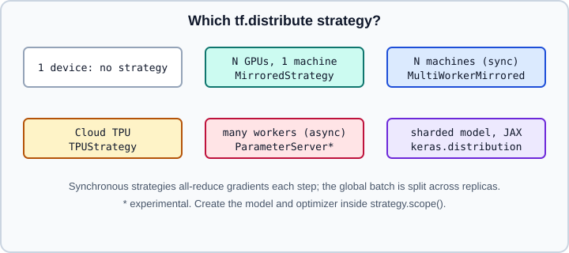

Distributed Training: tf.distribute & the Keras Distribution API
|
This content was generated with the assistance of AI and should be verified against the official documentation before being relied on in production. |
Training on more than one accelerator means splitting work across replicas and keeping the model copies consistent. TensorFlow offers tf.distribute.Strategy objects that wrap a training program with a few lines; Keras 3 adds a separate, backend-independent keras.distribution API for data and model parallelism. This page explains the strategies, how the batch size and loss change, a custom loop under a strategy, multi-worker setup with TF_CONFIG, and the Keras distribution API. Concepts shared with other frameworks (data, tensor and pipeline parallelism, all-reduce, ZeRO and sharding) are in Distributed Training Concepts; the PyTorch counterparts are DistributedDataParallel and FSDP2. Within the TensorFlow section see also Devices, Mixed Precision, tf.data Performance and Training Checkpoints.
It targets Python 3.13 and TensorFlow 2.21 with Keras 3.15 (TensorFlow 2.22 is "upcoming" and not covered), and was checked against the official documentation on 2026-10-30. Examples were run on Python 3.13 with TensorFlow 2.21 and Keras 3.15 (CPU) on 2026-10-31, where MirroredStrategy has a single replica. Snippets that continue an earlier example, or use names such as model and train_ds defined elsewhere, were run with small synthetic stand-ins.
Choosing a strategy

The figure is an original summary of the support matrix in the TensorFlow distributed training guide.
| Strategy | Use | Status for Model.fit and custom loops |
|---|---|---|
|
synchronous training on several GPUs of one machine |
supported |
|
synchronous training across machines, each with one or more GPUs |
supported |
|
synchronous training on Cloud TPUs |
supported; eager mode is not supported |
|
asynchronous training with variables on parameter servers, driven by a |
experimental |
|
variables on the CPU, operations replicated over local GPUs |
experimental |
|
all work on one device, for prototyping and debugging |
supported |
The Estimator column of the official matrix is omitted here: Estimators are not recommended for new code and receive only security fixes. A default (pass-through) strategy is active when no strategy scope is entered; tf.distribute.get_strategy() returns it, which lets library code call strategy.reduce unconditionally.
Experimental APIs carry no compatibility guarantees. The guide’s examples still use names such as experimental_distribute_dataset and experimental_local_results; check the API reference of your version for non-experimental equivalents.
MirroredStrategy with Keras
import tensorflow as tf
import keras
strategy = tf.distribute.MirroredStrategy() # all visible GPUs, NCCL all-reduce
# strategy = tf.distribute.MirroredStrategy(devices=["/gpu:0", "/gpu:1"])
print("Replicas in sync:", strategy.num_replicas_in_sync)
with strategy.scope():
# Variables, optimizer slots and metrics must be created inside the scope
model = keras.Sequential([
keras.layers.Input(shape=(784,)),
keras.layers.Dense(256, activation="relu"),
keras.layers.Dense(10),
])
model.compile(
optimizer=keras.optimizers.Adam(1e-3 * strategy.num_replicas_in_sync),
loss=keras.losses.SparseCategoricalCrossentropy(from_logits=True),
metrics=["accuracy"],
)
BATCH_PER_REPLICA = 64
global_batch = BATCH_PER_REPLICA * strategy.num_replicas_in_sync
(x, y), _ = keras.datasets.mnist.load_data()
x = x.reshape(-1, 784).astype("float32") / 255.0
ds = (tf.data.Dataset.from_tensor_slices((x, y))
.shuffle(10_000)
.batch(global_batch)
.prefetch(tf.data.AUTOTUNE))
model.fit(ds, epochs=2)How it works: each variable becomes a mirrored variable with a copy on every GPU. Each global batch is split into equal slices, every replica computes forward and backward on its slice, gradients are summed with an all-reduce, and every replica applies the same update. MirroredStrategy accepts cross_device_ops: tf.distribute.NcclAllReduce() (the default on NVIDIA GPUs), tf.distribute.HierarchicalCopyAllReduce() or tf.distribute.ReductionToOneDevice().
Rules that apply to every synchronous strategy:
-
Create the model, optimizer and metrics inside
strategy.scope(); callingcompilethere is enough forfit. Variables created outside the scope are not distributed. -
The batch size passed to
tf.datais the global batch size, split among replicas. Scale it bynum_replicas_in_sync, and re-tune the learning rate because the effective batch grew. Scaling the learning rate linearly is a common starting point, not a rule. -
NumPy inputs work too with
model.fit(x, y, batch_size=...). -
Keep the input pipeline fast enough to feed all replicas; see tf.data Performance.
tf.datadatasets are automatically sharded across workers by file or by data, controlled withtf.data.Options().experimental_distribute.auto_shard_policy.
A custom training loop under a strategy
In a custom loop you distribute the dataset, run the step per replica and aggregate. The loss must be averaged over the global batch, not the per-replica batch, otherwise the summed gradients are too large by the replica count.
import tensorflow as tf
import keras
strategy = tf.distribute.MirroredStrategy()
GLOBAL_BATCH = 64 * strategy.num_replicas_in_sync
with strategy.scope():
model = keras.Sequential([keras.layers.Input(shape=(20,)), keras.layers.Dense(1)])
optimizer = keras.optimizers.SGD(0.01)
# No automatic reduction: we divide by the global batch ourselves
loss_object = keras.losses.BinaryCrossentropy(from_logits=True, reduction="none")
features = tf.random.normal((1024, 20))
labels = tf.cast(tf.random.uniform((1024, 1)) > 0.5, tf.float32)
dataset = tf.data.Dataset.from_tensor_slices((features, labels)).batch(GLOBAL_BATCH)
dist_dataset = strategy.experimental_distribute_dataset(dataset)
def train_step(inputs):
x, y = inputs
with tf.GradientTape() as tape:
logits = model(x, training=True)
per_example = loss_object(y, logits)
loss = tf.nn.compute_average_loss(per_example, global_batch_size=GLOBAL_BATCH)
if model.losses: # regularization terms
loss += tf.nn.scale_regularization_loss(tf.add_n(model.losses))
grads = tape.gradient(loss, model.trainable_variables)
optimizer.apply_gradients(zip(grads, model.trainable_variables))
return loss
@tf.function
def distributed_step(dist_inputs):
per_replica = strategy.run(train_step, args=(dist_inputs,))
return strategy.reduce(tf.distribute.ReduceOp.SUM, per_replica, axis=None)
for epoch in range(2):
total, batches = 0.0, 0
for dist_inputs in dist_dataset:
total += float(distributed_step(dist_inputs))
batches += 1
print(f"epoch {epoch}: loss {total / batches:.4f}")Notes: strategy.run returns per-replica values; use strategy.reduce for one aggregate or strategy.experimental_local_results for a tuple per replica. compute_average_loss divides by the global batch size, and scale_regularization_loss divides a regularization loss by the replica count. The reduction="none" string form is the Keras 3 spelling; the TensorFlow guide writes tf.keras.losses.Reduction.NONE, which Keras 3.15 keeps only as a legacy constant equal to the string "none". Keras 3 still lets you use the loop style from Writing a Training Loop from Scratch.
Multi-worker training
MultiWorkerMirroredStrategy runs the same program on every machine. Each process learns its role from the TF_CONFIG environment variable, a JSON document listing all workers and this worker’s index.
# On worker 0 (chief): the other worker is on host2
export TF_CONFIG='{"cluster": {"worker": ["host1:12345", "host2:12345"]}, "task": {"type": "worker", "index": 0}}'
python train.py
# On worker 1: same cluster, different index
export TF_CONFIG='{"cluster": {"worker": ["host1:12345", "host2:12345"]}, "task": {"type": "worker", "index": 1}}'
python train.py# train.py
import tensorflow as tf
import keras
comm = tf.distribute.experimental.CommunicationOptions(
implementation=tf.distribute.experimental.CommunicationImplementation.NCCL)
strategy = tf.distribute.MultiWorkerMirroredStrategy(communication_options=comm)
with strategy.scope():
model = keras.Sequential([keras.layers.Input(shape=(784,)), keras.layers.Dense(10)])
model.compile("sgd", keras.losses.SparseCategoricalCrossentropy(from_logits=True))
# Global batch = per-worker batch x total replicas; build the dataset after the strategy exists
ds = make_dataset(global_batch=64 * strategy.num_replicas_in_sync)
model.fit(ds, epochs=3)Source: https://www.tensorflow.org/guide/distributed_training and https://www.tensorflow.org/tutorials/distribute/multi_worker_with_keras
A real multi-worker run needs several hosts (or several processes with a matching TF_CONFIG) and was not executed. Without TF_CONFIG the same train.py runs as a single worker, which is a convenient smoke test before launching a cluster.
Communication options are RING (RPC based, CPU and GPU), NCCL (GPU only, best GPU performance) and AUTO (default, TensorFlow decides). Practical advice from the multi-worker tutorial: create the strategy first, keep the checkpoint or save path distinct per worker for non-chief workers, make all workers start with the same code, and add fault-tolerance with a BackupAndRestore callback (see Callbacks). Multi-machine scheduling on Kubernetes or Slurm is outside TensorFlow; compare PyTorch Distributed Overview and torchrun.
TPUStrategy
import tensorflow as tf
resolver = tf.distribute.cluster_resolver.TPUClusterResolver(tpu="my-tpu-name")
tf.config.experimental_connect_to_cluster(resolver)
tf.tpu.experimental.initialize_tpu_system(resolver) # wipes TPU memory
strategy = tf.distribute.TPUStrategy(resolver)
print("Replicas:", strategy.num_replicas_in_sync)Source: https://www.tensorflow.org/guide/distributed_training and https://www.tensorflow.org/guide/tpu
This snippet needs a Cloud TPU and was not executed. On Colab no arguments are needed. Eager execution is not supported with TPUStrategy, so code runs inside tf.function or fit. Prefer mixed_bfloat16 and batch sizes in multiples of 128 (see Mixed Precision). Details of TPU hosts are on Devices.
ParameterServerStrategy
ParameterServerStrategy keeps variables on parameter-server tasks and dispatches steps to workers through a tf.distribute.experimental.coordinator.ClusterCoordinator, so workers update asynchronously and a failed worker does not stall the others. It targets very large models or unreliable clusters. It is experimental, needs a TF_CONFIG with chief, worker and ps tasks, and is usually driven from a custom loop or with Model.fit plus a DatasetCreator. Treat it as an advanced option; synchronous strategies are better supported. Stale gradients mean convergence differs from synchronous training.
The Keras distribution API
Keras 3 includes keras.distribution, a global programming model: you write single-device code and Keras expands it to many devices. The documentation states that, for now, this API is implemented only for the JAX backend. With the TensorFlow backend use tf.distribute as above (or the lower-level DTensor API in TensorFlow). If you set KERAS_BACKEND=jax the same model code can use data and model parallelism; the backend choice is covered on Keras Multi-Backend.
import os
os.environ["KERAS_BACKEND"] = "jax" # must be set before importing keras
import jax
import keras
from keras import layers
devices = jax.devices() # for example 8 accelerators
# Data parallel: weights replicated, batch split along the "data" axis
data_parallel = keras.distribution.DataParallel(devices=devices)
# Model parallel: a 2 x 4 mesh with named axes and a layout map for weights
mesh = keras.distribution.DeviceMesh(
shape=(2, 4), axis_names=["data", "model"], devices=devices)
layout_map = keras.distribution.LayoutMap(mesh)
layout_map["d1/kernel"] = (None, "model") # shard the kernel columns over "model"
layout_map["d1/bias"] = ("model",)
layout_map["d2/output"] = ("data", None) # layout of a layer output
model_parallel = keras.distribution.ModelParallel(layout_map=layout_map, batch_dim_name="data")
keras.distribution.set_distribution(model_parallel) # before building the model
inputs = layers.Input(shape=(784,))
x = layers.Dense(200, activation="relu", name="d1")(inputs)
x = layers.Dense(10, activation="softmax", name="d2")(x)
model = keras.Model(inputs, x)
model.compile(loss="sparse_categorical_crossentropy", optimizer="adam")
# model.fit(dataset, epochs=3)Concepts:
-
DeviceMeshmaps physical devices onto a logical grid with named axes.TensorLayoutsays which mesh axis each tensor dimension is split along (Nonemeans replicated). -
DataParallelreplicates weights, optimizer state and metrics and splits each batch. It can be built from a device list or a 1-D mesh. -
ModelParallelshards weights or activations according to aLayoutMap, a dictionary-like object whose keys are exact variable paths or regular expressions. If several keys match, aValueErroris raised; if none matches, the variable is replicated. -
Changing only the mesh shape moves you between data and model parallelism, for example
(8, 1),(4, 2),(2, 4)and(1, 8). -
Without accelerators you can try the example on virtual CPU devices: set
XLA_FLAGS=--xla_force_host_platform_device_count=8before importing JAX, andjax.devices()then returns eight CPU devices. The example above was run that way; thed1kernel is created with the shardingP(None, 'model')over the 2 x 4 mesh. -
ModelParalleltakes keyword arguments only (layout_map=,batch_dim_name=); passing the layout map positionally raisesTypeError. -
keras.distribution.set_distributionmust be called before building the model, andfitandevaluatethen split the dataset along the batch dimension without manual loss aggregation.
The same ideas as PyTorch’s DTensor are on DTensor, Tensor and Pipeline Parallelism, and sharded training memory arithmetic is in Distributed Training Concepts.
Checkpointing, determinism and monitoring
-
Save from a single process, or use a checkpoint API that understands distributed variables; see Training Checkpoints and Saving Keras Models.
-
Log metrics from the chief worker only, to avoid duplicated TensorBoard events (TensorBoard).
-
Keras models trained under a strategy can be loaded and exported like any other; the strategy is not part of the saved file.
-
Profile the input pipeline and all-reduce time before adding GPUs (Performance, XLA and Profiling); the best strategy is the one that keeps accelerators busy.
References
-
TensorFlow guide, Distributed training with TensorFlow: https://www.tensorflow.org/guide/distributed_training
-
TensorFlow tutorial, Multi-worker training with Keras: https://www.tensorflow.org/tutorials/distribute/multi_worker_with_keras
-
TensorFlow tutorial, Parameter server training: https://www.tensorflow.org/tutorials/distribute/parameter_server_training
-
TensorFlow guide, Use TPUs: https://www.tensorflow.org/guide/tpu
-
Keras guide, Distributed training with the distribution API: https://keras.io/guides/distribution/
-
Keras guide, Multi-GPU distributed training with TensorFlow: https://keras.io/guides/distributed_training_with_tensorflow/
-
Concepts: Distributed Training Concepts